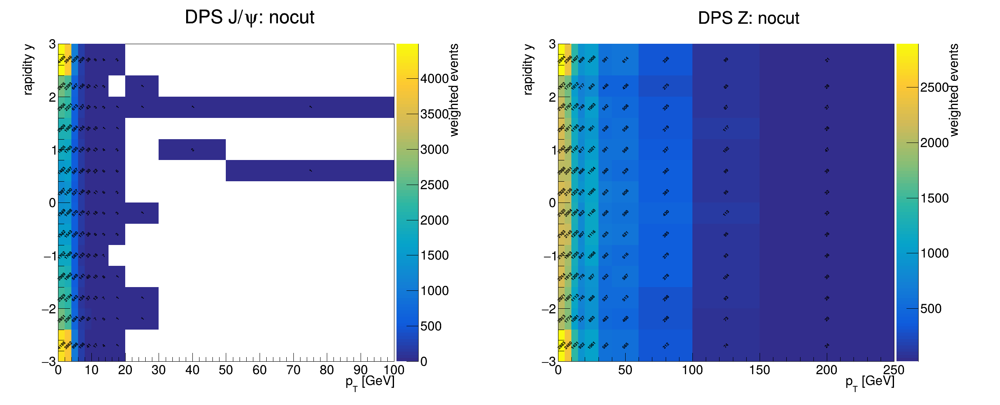
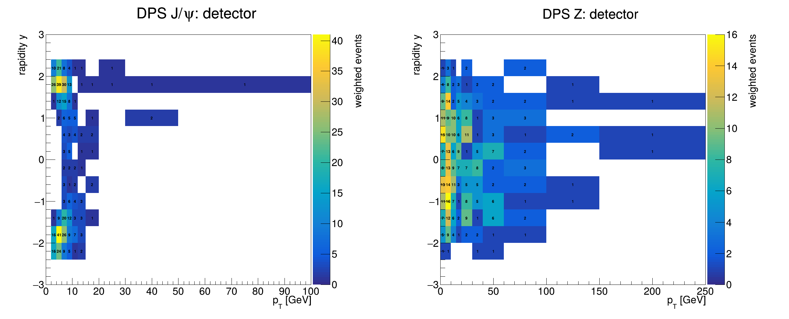
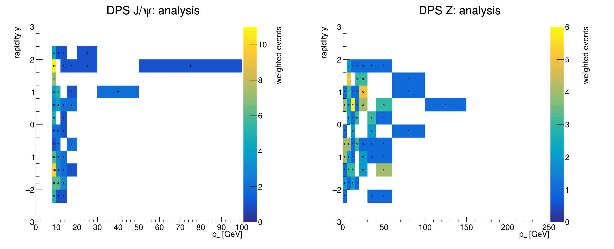
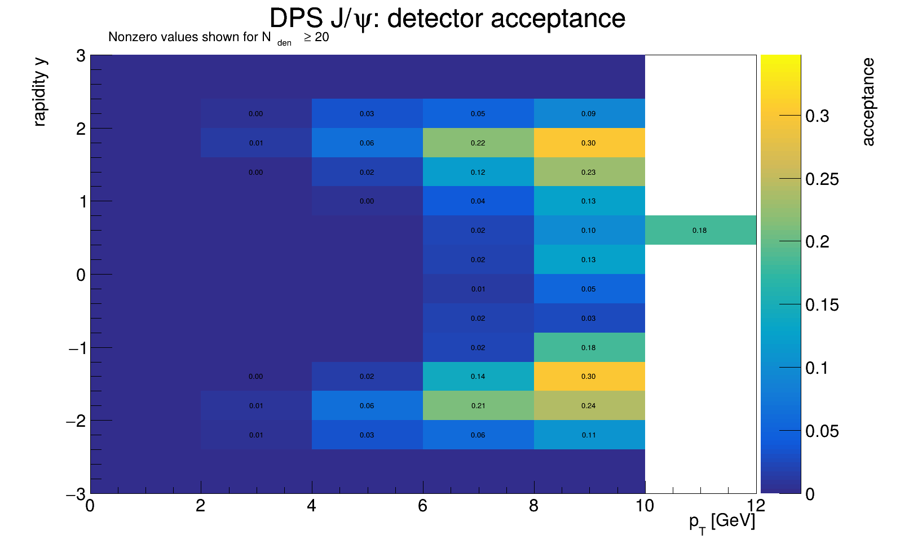
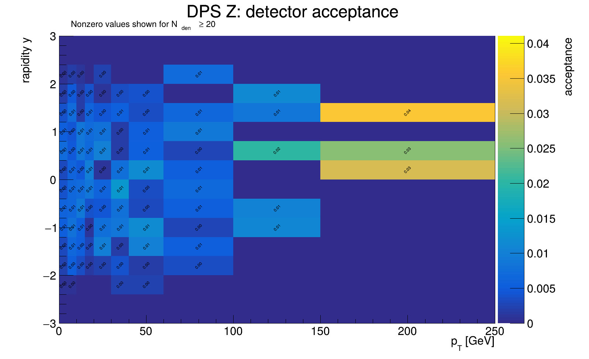
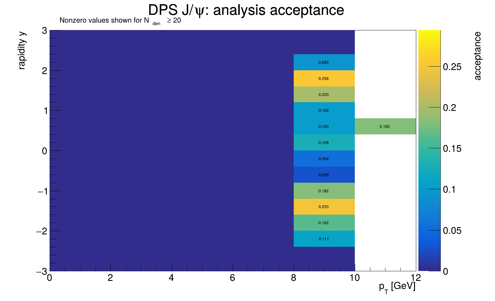
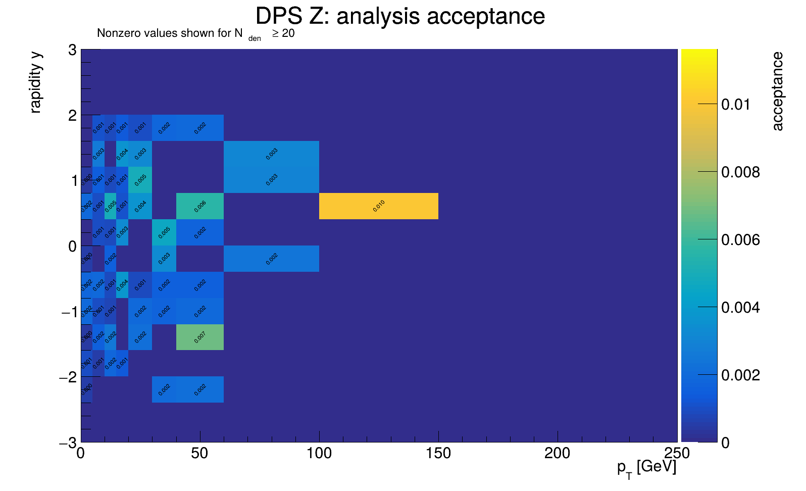

DPS requested
200,000
events
A reproducible, visual summary of private MC production, generator validation, acceptance cuts and physics plots.
DPS physics configuration validated; J/ψ and Z are both forced to μ+μ−.
Output
/store/user/gjinjing/JpsiZ/MC2024/DPS_GENtree_v2/Legacy Pythia fragments do not generate a genuine single-hard-scatter J/ψ+Z sample.
The color scale and printed bin values show the weighted MC event yield in each pT-rapidity bin, before cuts, after generator-level detector fiducial cuts, and after the tentative analysis cuts.



These are generator-level, bin-by-bin acceptances, evaluated separately in the J/ψ and Z (pT, y) planes. For each bin i,
Adet(i) = Ndetector cuts(i) / Nvalid GEN J/ψ+Z→4μ(i)
Aana(i) = Nanalysis cuts(i) / Nvalid GEN J/ψ+Z→4μ(i).
The denominator contains events with a valid generated J/ψ and Z, both decaying to μ+μ−. The numerator is the subset of those same events passing the detector or tentative analysis selection defined below. A J/ψ map uses the generated J/ψ coordinates for binning; a Z map uses the generated Z coordinates. Thus the maps measure kinematic/fiducial acceptance, not reconstruction, identification or trigger efficiency.
ROOT divides the numerator and denominator TH2Ds with the binomial option B. For an unweighted bin, the displayed statistical uncertainty corresponds to σA = √[A(1−A)/Nden]. Bins with zero denominator are left blank. To avoid displaying unstable numbers, values are printed on the PNG only when Nden ≥ 20; the complete maps and stored uncertainties remain in the ROOT output.




Valid generator-level J/ψ + Z → 4μ candidate.
|ημ| < 2.4; J/ψ muon piecewise pT threshold; Z muon pT > 5 GeV.
Detector cuts + pT(J/ψ) > 8 GeV, |y(J/ψ)| < 2.4, 2.9 < mμμ(J/ψ) < 3.3 GeV, 81 < mμμ(Z) < 101 GeV, Z muons pT > 25/15 GeV.
THU workspace
/home/storage2/users/gjinjing/JpsiZ_Run2Run3_MC
CRAB task
260730_185201:gjinjing_crab_DPS_JpsiZTo4Mu_GENtree_2024_v2_200k{kind=link}
{kind=link}
{kind=link}
{kind=link}
{kind=link}
{kind=link}
{kind=link}